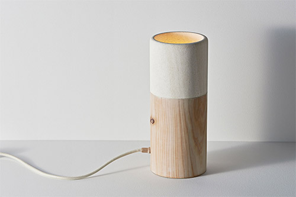

베트남 사회주의 공화국(베트남어: Cộng hòa xã hội chủ nghĩa Việt Nam꽁호아싸호이쭈응이어비엣남, 문화어: 윁남사회주의공화국)은 동남아시아의 국가이다. 약칭은 베트남(베트남어: Việt Nam비엣남, 문화어: 윁남)이다. 주요 도시로는 하노이, 호찌민시, 다낭, 하이퐁, 호이안, 사파, 후에 등이 있다. 북쪽으로는 중화인민공화국, 서쪽으로는 라오스 및 캄보디아와 국경을 접하고 동쪽과 남쪽으로는 동해(남중국해)에 면해 있다.
면적은 약 33만 341km²이다. 인도차이나 반도에서 가장 인구가 많은 나라로 최근 인구 통계에서는 9,649만 명으로 조사되어,[2] 세계에서 15번째로 인구가 많은 나라이다. 나라의 명칭인 비엣남(Việt Nam)은 1945년부터 공식적으로 사용되고 있는데, 이것은 오늘날 베트남 북부와 중국 남부를 지배하였던 옛 베트남 왕조인 남월(베트남어: Nam Việt남비엣)의 명칭을 거꾸로 쓴 것이다. 수도는 하노이이며,
최대 도시는 호찌민시이다. 중화인민공화국과 같은 혼합경제체제를 가진 명목상 공산주의 국가다. 고대 베트남은 중국의 지배를 받았으나 938년 박당 전투에서 응오 왕조의 시조인 응오꾸옌(베트남어: Ngô Quyền)이 오대 십국의 하나인 남한과 싸워 이겨 독립하였다.[3] 독립 이후 베트남의 왕조들은 지속적으로 영토를 확장하여 인도차이나 반도의 동안을 따라 남쪽으로 국경을 넓혀갔으며, 이러한 영토 확장은 청나라와의
청불 전쟁에서 승리한 프랑스의 식민 지배가 시작될 때까지 계속되었다. 프랑스의 식민 지배를 받는 동안 베트남은 프랑스령 인도차이나의 일부로 편입되었다. 베트남은 프랑스 식민 지배 기간 동안 계속하여 독립 운동을 벌였고, 제2차 세계대전 기간에는 일본의 지배를 받기도 하였다. 전쟁이 끝난 후, 1945년 9월 2일 호치민은 하노이의 바딘 광장에서 베트남의 독립을 선언하고 베트남 민주 공화국의 수립을 선언하였다.[4]
그러나, 프랑스는 베트남의 독립을 인정하지 않았고, 프랑스와 베트남은 제1차 인도차이나 전쟁을 벌이게 되었다. 1954년 3월 13일 디엔비엔푸 전투에서 베트남군이 대승을 거두고 프랑스군이 철수를 하면서 베트남은 독립을 맞게 되었다.[5] 그러나 서구 열강은 제네바 협정을 통해 베트남을 다시 북위 17도를 기준으로 남북으로 분단시켰고, 약속하였던 전국 선거를 거부한 채 응우옌 왕조의 마지막 황제 바오 다이를 왕으로
내세워 베트남국을 수립하였다.[6] 베트남은 얼마 지나지 않아 응오딘지엠의 쿠데타로 붕괴하고 베트남 공화국이 세워져 남북의 대결이 시작되었다. 미국은 도미노 이론을 내세워 베트남에 개입하였으며 통킹만 사건을 빌미로 베트남 전쟁이 벌어지게 되었다. 베트남 전쟁 기간 동안 미국은 제2차 세계대전에서 사용한 것보다 훨씬 많은 폭탄을 북베트남 지역에 투하하였고 막강한 화력과 인력을 동원하였으나, 베트남의 끈질긴 저항과
전쟁을 계속하는 동안 일어난 전 세계와 미국 내의 반전 여론에 밀려 결국 1973년 파리 협정을 맺고 철군하였다. 1975년 북베트남은 사이공을 점령하였고, 1976년 7월 2일 베트남 사회주의 공화국을 수립하였다.[7] 전쟁 후 베트남은 전후 복구와 공산주의 경제체제를 통한 발전을 도모하였으나, 1979년 크메르 루주와 전쟁을 치렀고,[8] 중화인민공화국과도 국경분쟁으로 중국-베트남 전쟁을 치르는 등 순탄하지
않았다.[9] 1992년 베트남 공산당은 도이 머이를 시작하여 혼합 경제를 도입하였고,[10] 2000년에는 거의 대부분의 국가와 수교를 맺었다.
